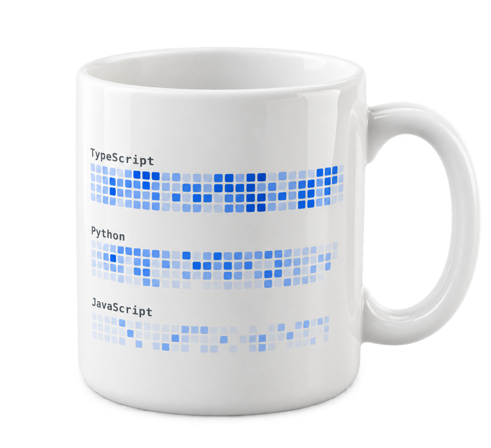
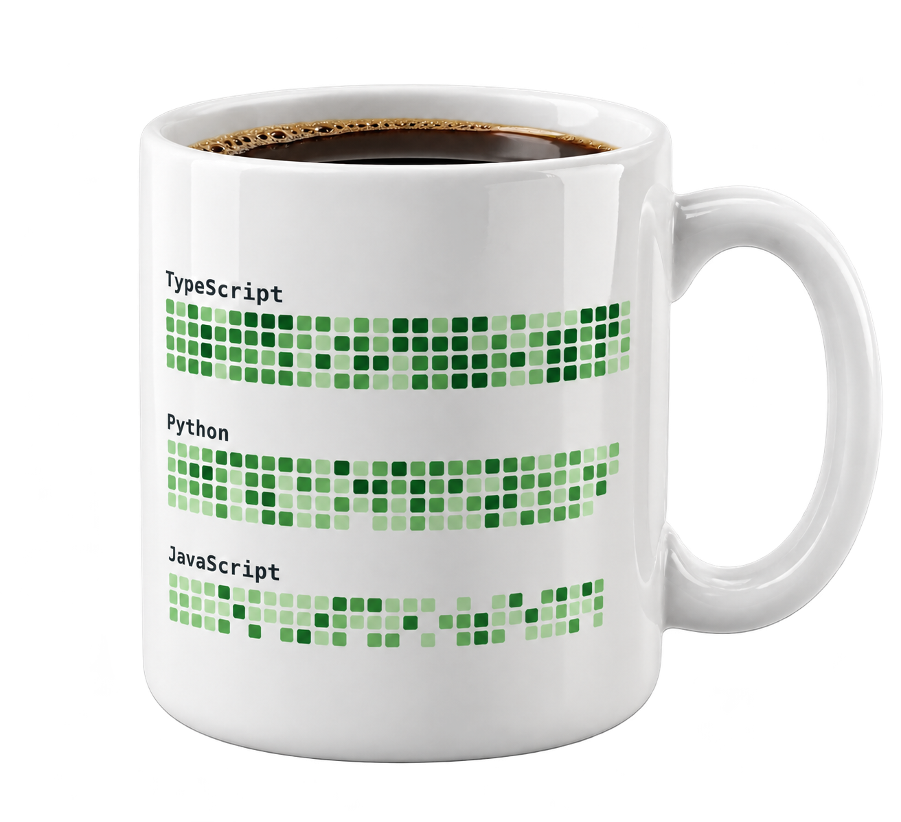
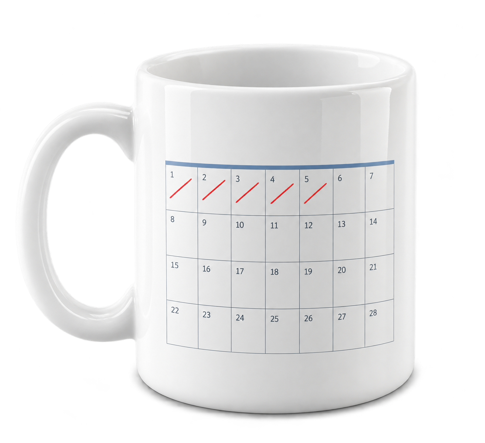

A LITTLE CODE. A LITTLE COFFEE.GITPILOTLEE / PERSONAL SPACE


杯身图案 · 语言热度依据 ↗
依据 GitHub Octoverse 2026，2025 年 9 月至 2026 年 9 月新增月度贡献者：TypeScript 362 万、Python 323 万、JavaScript 182 万。杯身方格是按增长热度设计的艺术图案，不代表每日贡献或市场份额。
阅读 GitHub 官方报告 · 2026-10-28 ↗PERSONAL HOMEPAGE / GITPILOTLEE向下探索 ↓
01 / ABOUT

代码之外，
还有持续探索的好奇心。
我是 Gitman，在 GitHub 上使用 Gitpilotlee 这个名字。这里收录我的公开项目与代码入口，欢迎来看看，也期待新的交流。
在 GitHub 认识我 ↗02 / ACTIVITY LOG
近一年提交与贡献。
每一格，是一天的积累。
▸ GITPILOTLEE / CONTRIBUTIONS最近 365 天
正在读取 GitHub 近一年贡献记录…
加载后，点击方格可查看当天贡献。
贡献强度少多
月度趋势
按贡献次数汇总查看月度数据表
| 月份 | 贡献次数 |
|---|
正在连接数据源…
统计口径为 GitHub 个人主页贡献，包含符合条件的代码提交、PR、Issue 等，并非仅计算 commit；私有活动依账号公开设置显示。数据由 GitHub Contributions API 读取，可能缓存约 1 小时。查看 GitHub 原始记录 ↗
03 / OPEN SOURCE
04 / SAY HELLO
下一次连接，从这里开始。
Let's connect↗找到我，查看代码，交流想法。github.com/Gitpilotlee ↗